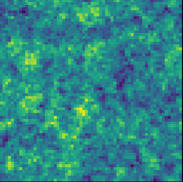

Reconstructing the Initial Conditions of the Universe
ML + X Symposium, May 29th, 2023
Chirag Modi
Center for Computational Astrophysics
Center for Computational Mathematics
Flatiron Institute
The story of our Universe


Credits: M. Blanton and SDSS
Standard model: $\Lambda$-CDM
$\Lambda$: cosmological constant dark energy
CDM: Cold dark matter
$\Lambda$: cosmological constant dark energy
CDM: Cold dark matter
Open questions
- What is dark energy?
- What is dark matter made of?
- How did inflation happen?
- What are the masses of neutrinos?
- Is GR the theory of gravity?
- ...
Next generation of cosmological probes
Galaxy Clustering
DESI, LSST, Euclid
DESI, LSST, Euclid
Gravitational Lensing
DES, LSST

DES, LSST
21-cm Intensity Mapping
CHIME, HIRAX, PUMA

CHIME, HIRAX, PUMA
Cosmic Microwave Background
ACT, SO, CMB-S4

ACT, SO, CMB-S4
and other tracers
Lyman-$\alpha$ forests,
supernovae,
quasar clustering,
galaxy clusters,
peculiar velocity measurements,
& more
Lyman-$\alpha$ forests,
supernovae,
quasar clustering,
galaxy clusters,
peculiar velocity measurements,
& more
A paradigm shift
Large amount of high precision data from the next generation of cosmological surveys.
Dark Energy Spectroscopic Instrument (DESI)
- 14,000 square degrees over 5 years
- 35 million galaxies and quasars in 0 < z < 3.5
- In 7 months, it has already mapped out more galaxies than all of the previous 3D surveys combined.

DESI Collaboration: 1611.00036
Vera C. Rubin Observatory
( Large Synoptic Survey Telescope, LSST)
( Large Synoptic Survey Telescope, LSST)
- 18,000 square degrees, once every few days for 10 years
- Tens of billions of objects, each observed ~1000 times
- Galaxy clustering, weak lensing, supernovae & more

LSST Collaboration
Promise of the modern cosmological surveys

Constraints on H(z), expansion rate
Baryon Oscillation Spectroscopic Survey(BOSS) Survey

Forecast for constraints on H(z) from DESI survey
 Forecast for dark energy equation of state parameters from LSST
Forecast for dark energy equation of state parameters from LSST
DESI whitepaper (Aghamousa et al. (2016))
LSST Collaboration (2018)
Outline of this talk
In the next 3 parts, I will discuss how to do cosmological analysis for the next generation of surveys.
1. With great data,
comes great responsibility.
comes great responsibility.
Traditional Analysis
$\rightarrow$ Introduction
Field-level Inference
Simulation-based Inference
$\rightarrow$ Introduction
Field-level Inference
Simulation-based Inference
How do we do galaxy clustering analysis?
Data: a catalog of galaxies with their positions.
- Compute summary statistics of choice
- $\rightarrow$ generally 2-point correlation function or power spectrum
- Develop theoretical predictions for these summary statistics
- $\rightarrow$ generally based on perturbation theory
- Construct an analytic likelihood model
- $\rightarrow$ generally assumed to be Gaussian
- Profit: run MCMC to infer posterior on model parameters, $\,p(\theta | x ) \propto p(x | \theta) \ p(\theta)$
$$\xi_2(|x_1-x_2|) = \langle \delta(x_1) \delta(x_2) \rangle$$


Moving ahead, each of these steps is a limiting factor!

Measurement of 2-pt correlation function from BOSS survey

An example of perturbation theory integrals

Gaussian likelihood function for power spectrum

Example constraints from BOSS data analysis
Credit: M. Blanton and the Sloan Digital Sky Survey.
Ross et al. (2016)
Beutler et al. (including CM) (2016)
Beutler et al. (including CM) (2016)
Ross et al. (2016)
Beutler et al. (including CM) (2016)
Beutler et al. (including CM) (2016)
Kobayashi, Nishimichi et al. (2022)
Ivanov, Simonovic, Zaldarriaga (2020)
Limitations of current analyses #1
Traditional Analysis
$\rightarrow$ Limitations
Field-level Inference
Simulation-based Inference
$\rightarrow$ Limitations
Field-level Inference
Simulation-based Inference
We need to choose a summary statistic.


But which of these statistics?
bispectrum
three point function
trispectrum
reconstructed power spectrum
peak counts
k-nearest neighbor
marked power spectrum
density splits
wavelet coefficients
Minkowski functionals
...
three point function
trispectrum
reconstructed power spectrum
peak counts
k-nearest neighbor
marked power spectrum
density splits
wavelet coefficients
Minkowski functionals
...

Fisher forecast for
constraining various
parameters from
dark matter field.
Red: power spectrum
Others: wavlet analysis
Eickenberg et al. (2022)
constraining various
parameters from
dark matter field.
Red: power spectrum
Others: wavlet analysis
Eickenberg et al. (2022)
Limitations of current analyses #2
Traditional Analysis
$\rightarrow$ Limitations
Field-level Inference
Simulation-based Inference
$\rightarrow$ Limitations
Field-level Inference
Simulation-based Inference
We need theoretical models of the summary statistics.

Breakdown of perturbation theory on small scales (k>0.2 h/Mpc)
Modi, White, Vlah (2017)
Chen, Vlah et al. (2021)
Chen, Vlah et al. (2021)
Beyond traditional approaches to analysis
Traditional Analysis
$\rightarrow$ Forward Modeling
Field-level Inference
Simulation-based Inference
$\rightarrow$ Forward Modeling
Field-level Inference
Simulation-based Inference
Current Limitations
- Need to choose a summary statistic
$\rightarrow$ which one to use & how much information is extracted. - Need a theoretical model
$\rightarrow$ accurate in limited regimes & infeasible for new statistics - Need an analytic likelihood for inference
$\rightarrow$ limited to Gaussian approximation - Joint analysis of different statistics and surveys is challenging
A different approach: forward modeling
Instead of theoretical models, use computational simulation as the underlying physical models for inference.
1. Field-level Inference / Bayesian Hierarchical Modeling
2. Simulation-based Inference / Likelihood Free Inference / Implicit Inference
Example: forward modeling for galaxy clustering
Traditional Analysis
$\rightarrow$ Forward Modeling
Field-level Inference
Simulation-based Inference
$\rightarrow$ Forward Modeling
Field-level Inference
Simulation-based Inference
$x \sim f(\Lambda)$
data $\sim$ forward model (cosmology)
$\Lambda$
Cosmology
+
 Initial modes
Initial modes $z \sim \mathcal{N}(0, 1)$

Initial (Linear)
Dark Matter

Final (Evolved)
Dark Matter

Galaxies
(Tracers)
$x = f(\Lambda)$
Data
Data
$\rightarrow$
$\rightarrow$
$\rightarrow$
$\rightarrow$
Boltzmann
equations
equations
Gravity evolution
(N-Body/
PM simulations)
($\mathbf{\Lambda}$)
(N-Body/
PM simulations)
($\mathbf{\Lambda}$)
Halo finding +
Halo distribution/
Semi-analytic models
($\mathbf{\theta}$)
Halo distribution/
Semi-analytic models
($\mathbf{\theta}$)
Survey systematics
& summarize
($\mathbf{\theta}$)
& summarize
($\mathbf{\theta}$)
2. Field-level Inference
Field-level Inference
Traditional Analysis
Field-level Inference
$\rightarrow$ Introduction
Simulation-based Inference
Field-level Inference
$\rightarrow$ Introduction
Simulation-based Inference
Use simulations to model the field-level data without any compression
$\rightarrow$ Simultaneously infer the initial conditions of the Universe and the cosmological parameters.
$$ \log p(z | x) \propto \log p(x| f(z)) \ + \log p(z) $$
E.g., infer the initial conditions ($z$) by maximizing the posterior: $\hat{z} = \max_z \log p(z | x)$

But which summary statistic?
bispectrum
three point function
trispectrum
reconstructed power spectrum
peak counts
k-nearest neighbor
marked power spectrum
density splits
wavelet coefficients
Minkowski functionals
...
three point function
trispectrum
reconstructed power spectrum
peak counts
k-nearest neighbor
marked power spectrum
density splits
wavelet coefficients
Minkowski functionals
...

True initial conditions
$z_0$

Reconstructed initial conditions $z$

Reconstructed data
$x' = f(z)$

Data
$x = f(z_0)$
In addition to inferring a handful of cosmology parameters,
we now also wish to estimate millions of latent parameters.
1.
Optimal
analysis
2.
Joint
analysis
3.
New science
cases
we now also wish to estimate millions of latent parameters.
Why?
1.
Optimal
analysis
2.
Joint
analysis
3.
New science
cases
Why field-level inference #1
Traditional Analysis
Field-level Inference
$\rightarrow$ Advantages
Simulation-based Inference
Field-level Inference
$\rightarrow$ Advantages
Simulation-based Inference
It is the optimal approach to cosmological analysis

Modi et al. (in preparation)

Fisher information ($\mathcal{I}$) in BAO for different fields as a function of scales
$\bar{n}$: number density of tracers
$\bar{n}$: number density of tracers
Modi, Feng, Seljak (2018)
Eisenstein et.a. (2007)
Seo et al. (2007)
Eisenstein et.a. (2007)
Seo et al. (2007)
Why field-level inference #3
Traditional Analysis
Field-level Inference
$\rightarrow$ Advantages
Simulation-based Inference
Field-level Inference
$\rightarrow$ Advantages
Simulation-based Inference
Reconstruct unobserved fields to enable new analyses.
Unique to field-level inference!
Other e.g. initial density for primordial physics, dark matter for galaxy formation.
HIRAX


True
Distribution
Distribution

Noisy
Data
Data

Reconstructed Data


Modi, White et al. (2019)
Modi, Castorina et al. (2019)
Modi, White et al. (2021)
Modi, Castorina et al. (2019)
Modi, White et al. (2021)
Field-level inference enables:
1. optimal cosmological analysis,
2. joint analyses of different datasets,
3. unique opportunities for new science cases.
1.
Differentiable
Simulations
2.
High dimensional
inference
1. optimal cosmological analysis,
2. joint analyses of different datasets,
3. unique opportunities for new science cases.
So what do we need to enable it?
1.
Differentiable
Simulations
2.
High dimensional
inference
Advances for field-level inference #1
Traditional Analysis
Field-level Inference
$\rightarrow$ Advances
Simulation-based Inference
Field-level Inference
$\rightarrow$ Advances
Simulation-based Inference
Fast, differentiable cosmological simulations.
- Infer initial conditions at all points in the Universe
$\sim$ over a million unknown parameters - Need to use gradient based inference algorithms
E.g. gradient descent optimization,
Hamiltonian Monte Carlo (HMC) sampling
- Response of likelihood with cosmological parameters $\Lambda$ &
the initial conditions $z$.
$g_z = \frac{\partial\, p(x| z, \Lambda)}{\partial\, z},\, g_{\Lambda} = \frac{\partial\, p(x | z, \Lambda)}{\partial\, \Lambda}$

Examples of differentiable codes upto 2017
Jasche & Lavaux (2018)
Wang, Mo, Yang, Bosch (2014)
Wang, Mo, Yang, Bosch (2014)
Opening up the cosmological simulations
Evolving dark-matter particles under gravity.Particle-Mesh simulations: approximate gravitational forces by estimating densities on a grid.
- The numerical scheme:
- Estimate the density of particles on a mesh
- Compute gravitational forces by FFT
- Interpolate forces at particle positions
- Update particle velocity and positions, and iterate
- Fast and simple, at the cost of approximating short range interactions.


$\Longrightarrow$ Only a series of FFTs and interpolations.
Differentiable cosmological simulations
Traditional Analysis
Field-level Inference
$\rightarrow$ Advances
Simulation-based Inference
Field-level Inference
$\rightarrow$ Advances
Simulation-based Inference
-
FlowPM: the first particle-mesh simulations in TensorFlow
- Automatic differentiation
- Access to SOTA inference algorithms
- Seamless interfacing with deep-learning tools
- Reconstructing the Universe in 10 lines
- Memory limited as every time-step is saved.
- $pmwd$: particle mesh with derivatives
- Exploit reversibility of leapfrog integration.
- Memory cost is independent of the time stepping
- GPU accelerated simulations
Timings for 1 step
of 256$^3$ simulation:FastPM 1 CPU 40s FastPM 32 CPU 3s FlowPM 1 GPU 1s FlowPM 32 GPU 0.4s $pmwd$ 1 GPU 0.01s $\Big\}$ 10x faster
$\rightarrow$ 100x faster


import tensorflow as tf
import flowpm
#Run simulation from variable initial conditions
linear = tf.get_variable('linear', shape=(nc, nc, nc),
initializer=tf.random_normal_initializer(), trainable=True)
initial_conditions = flowpm.lpt_init(linear, name='icstate')
final_state = flowpm.nbody(initial_conditions, stages, nc, name='fnstate')
final_field = flowpm.cic_paint(tf.zeros_like(linear), final_state[0], boxsize=bs)
#Likelihood term: ((data-model)/noise)^2
residual = tf.multiply(tf.subtract(final_field, data), 1/sigma)
neg_log_likelihood = tf.reduce_sum(tf.multiply(residual, residual))
#Prior: (linear_modes^2 / linear_power_spectrum)
lineark = flowpm.r2c3d(linear, norm=nc**3)
neg_log_prior = tf.square(tf.cast(tf.abs(lineark), tf.float32))
neg_log_prior = tf.reduce_sum(tf.multiply(neg_log_prior, 1/priorwt))j
#Loss & optimize
loss = tf.add(neg_log_likelihood, neg_log_prior, name='loss')
optimizer = ScipyOptimizerInterface(loss, var_list=[linear], 'L-BFGS-B')
with tf.Session() as session:
optimizer.minimize(session)
recon = session.run(linear)
 time-scaling for $pmwd$ simulations
time-scaling for $pmwd$ simulations$\rightarrow pmwd$ is faster than deep learning emulators
Modi, Lanusse, Seljak (2020)
Seljak, Aslanyan, Feng, Modi (2017)
https://github.com/DifferentiableUniverseInitiative/flowpm
Modi, Lanusse, Seljak (2020)
Seljak, Aslanyan, Feng, Modi (2017)
Li, Modi et al. (2022)
Li, Lu, Modi et al. (2022)
https://github.com/eelregit/pmwd
https://github.com/DifferentiableUniverseInitiative/flowpm
Seljak, Aslanyan, Feng, Modi (2017)
https://github.com/DifferentiableUniverseInitiative/flowpm
Modi, Lanusse, Seljak (2020)
Seljak, Aslanyan, Feng, Modi (2017)
Li, Modi et al. (2022)
Li, Lu, Modi et al. (2022)
https://github.com/eelregit/pmwd
https://github.com/DifferentiableUniverseInitiative/flowpm
Roadmap for differentiable cosmological simulations
Traditional Analysis
Field-level Inference
$\rightarrow$ Advances
Simulation-based Inference
Field-level Inference
$\rightarrow$ Advances
Simulation-based Inference
Extensions for the next generation of cosmological surveys.
Modi, Lanusse, Seljak (2020)
Li, Modi et al. (2022)
Boehm, Feng et al. (2020)
Lanzieri, Lanusse, Modi et al. (in prep)
Lanzieri, Lanusse, et al. (2021)
Dai and Seljak (2020)
Porqueres, Jasche, et al. (2019)
Li, Modi et al. (2022)
Boehm, Feng et al. (2020)
Lanzieri, Lanusse, Modi et al. (in prep)
Lanzieri, Lanusse, et al. (2021)
Dai and Seljak (2020)
Porqueres, Jasche, et al. (2019)
Advances for field-level inference #2
Traditional Analysis
Field-level Inference
$\rightarrow$ Advances
Simulation-based Inference
Field-level Inference
$\rightarrow$ Advances
Simulation-based Inference
Inference algorithms in high dimensions.
Accelerated inference algorithms in high dimensions.
1. Hamiltonian Monte Carlo (HMC)
Use gradients to obtain random samples from the posterior.
2. Variational self-Boosted Sampling (VBS)
Combine HMC and variational inference.
3. What next?
Algorithms for parameter inference.
True Initial conditons

HMC Samples


Auto-correlation length of HMC samples as function of scales for 4 chains.

VBS reduces auto-correlation length as compared to HMC by more than 10x
Dai and Seljak (2022)
Story of field-level inference
Using differentiable simulations for high dimensional inference
1. Maximum-a-posteriori estimate (MAP optimization)
1. Maximum-a-posteriori estimate (MAP optimization)
MAP optimization in action
$$\arg\max_s \ \log p(x_{dm} | f(s)) \ + \ p(s) $$
True initial conditions
$s_0$
Reconstructed initial conditions $s$
Reconstructed dark matter distribution $x_{dm} = f(s)$
Data
$x_{dm} = f(s_0)$
Check out this blogpost for more details
https://blog.tensorflow.org/2020/03/simulating-universe-in-tensorflow.html
https://blog.tensorflow.org/2020/03/simulating-universe-in-tensorflow.html
If only MAP optimization was easy...
$$\arg\max_s \ \log p(x_{dm} | f(s)) \ + \ p(s) $$
Direct optimization


ad-hoc annealing


- $\rightarrow$ Cross Correlation ($r_c$) with true initial conditions
$$
r_c(k) = \frac{P_{ab}(k)}{\sqrt{P_a(k)P_b(k)}}
$$
- $\rightarrow$ Transfer Function ($t_f$) with true initial conditions
$$t_f(k) = \sqrt{\frac{P_a(k)}{P_b(k)}}$$


- Direct optimization of MAP leads to poor solutions on large scales.
- Annealing recovers unbiased large scales, but at the cost of ad-hoc tempering procedure.
Instead of guessing an optimization scheme, could we
learn to optimize?
A closer look at the optimization algorithm
$$\arg\max_x \ \log p(y | f(x)) \ + \ p(x) $$
- Standard Gradient Descent Algorithm:
$$x_{i+1} = x_i - \epsilon \nabla_x \big(\log p(y | f(x_i)) + \log p(x_i) \big)$$
$$x_{i+1} = \Gamma \Big(x_i,\, \nabla_x \big(\log p(y | f(x_i)) + \log p(x_i)\big ) \Big)$$ with update function $\Gamma: (u,v) \rightarrow u + \epsilon v\big)$ - Many algorithms (e.g. ADAM, LBFGS) can expressed in this form with a different choice of $\Gamma$.

$\Longrightarrow$ What if we could learn this update function?
Recurrent Inference Machines for Solving Inverse Problems
Putzky & Welling, 2017

- Introduce a Recurrent Neural Network (RNN) $h_\phi$, and state variable $s$, so that: $$ s_{i+1} = h^*_\phi( \nabla \log p(y|x_{i}), x_i, s_{i})$$ $$ x_{i+1} = x_i + h_\phi(\nabla \log p(y|x_{i}), x_i, s_{i+1})$$
- Train according to: $$\mathcal{L} = \sum_{i}^T w_i\mathcal{L}(x_i, x)$$
CosmicRIM: Recurrence Inference Machines for Initial Condition Reconstruction
Modi, Lanusse, Seljak, Spergel, Perreault-Levasseur (2021)

Recurrent Neural Network Architecture


- A few notable differences to a vanilla RIM:
- We provide gradients of both prior and likelihood to the model.
- Because our forward model couples scales, we use a multiscale U-Net architecture.
- Input gradients are pre-scaled with the ADAM formula.
Experiments
Settings
- Data: Halo mass weighted field, $\bar{n}=10^{-3}$ (h/Mpc)$^3$
- Forward model: $64^3$ particles, 400 Mpc/h box, 2LPT dynamics with 2nd order bias model
- RIM: 10 steps, trained under L2 loss
Initial conditions cross-correlation


Transfer function

- CosmicRIM: Learn to optimize by embedding a Neural Network in the optimization algorithm.
$\Longrightarrow$ converges 40x faster than LBFGS.
What does RIM learn
- Physically motivated annealing
- large scales are reconstructed before small scales
- Local minima i.e. ADAM/L-BFGS starting from RIM output do not improve results

Beyond MAP estimate:
accelerating posterior inference with machine learning tools
accelerating posterior inference with machine learning tools
Baseline- Hamiltonian Monte Carlo (HMC)
Generate samples from the posterior distribution: $\pi(x|y) = \log p(y | f(x)) \ + \ p(x) $
- Construct a Hamiltonian system with
$\rightarrow$ parameters as a position vector $(q \leftarrow x)$
$\rightarrow$ the negative log-posterior as potential energy function $$U(q) = -\log \pi(q)$$ $\rightarrow$ auxillary momentum $(p)$ & associated kinetic energy
- Generate proposals for the Markov chain by simulating Hamiltonian dynamics
- accept/reject proposals to maintain detailed balance $$\alpha = \mathrm{min}(1, \exp(H(x_0) - H(x_1))$$
- asymptotically explores the entire distribution


Cost of the algorithm- samples are correlated!
Auto-correlation length ($a_c$) for every mode i.e. $k$-bin
$$
\rho_j(t) = \frac{1}{n} \sum_{i=t+1}^n (P_i(k_j) - \bar{P}(k_j)) (P_{i-t}(k_j) - \bar{P}(k_j)); \quad a_c := \rho_j(a_c) \leq 0.1
$$
- Longest auto-correlation length > 200
- Number of leapfrog steps per proposal ~ 50
- >10000 simulations for a single independent sample!!
Can variational inference (VI) do better?
Approximate the posterior with a parametric distribution
Ingredients
- Parametric distribution $q(z; \nu)$ with parameters $\nu$
$\rightarrow$ Normalizing flow with Fourier space convolutions - Divergence (loss function) to compare distributions
Backward Kullback Leibler Divergence
\begin{align}
D_{\mathrm{KL}}(q||p) &= \mathbb{E}_{q}(\log q - \log p) \nonumber \\
&= \mathbb{E}_{q}(\log q(z; \nu) - \log \pi(z| y_0)) \nonumber \\
& \approx \sum_{z_i \sim q(z)} \bigl[ \log q(z_i; \nu) - \log \pi(z_i | y_0) \bigr] \nonumber \\
& \leq \sum_{z_i \sim q(z)} \bigl[ \log q(z_i; \nu) - \log \pi(y_0 | z_i) - \log \pi(z_i) \bigr]
\end{align}

Forward Kullback Leibler Divergence
\begin{align}
D_{\mathrm{KL}}(p||q) &= \mathbb{E}_{p}(\log p - \log q) \nonumber \\
&= \mathbb{E}_{\pi(z| y_0)}(\log \pi(z| y_0) - \log q(z; nu)) \nonumber \\
& \approx \sum_{z_i \sim \pi(z| y_0)} \bigl[ \log \pi(z_i | y_0) - \log q(z_i; nu)\bigr] \nonumber
\end{align}
But requires generating samples from the posterior!!
Can we combine HMC and VI to complement each others shortcomings?
Variational self-Booseted Sampling (VBS)
Combine HMC and VI to generate samples from the target with smaller auto-correlation length
Motivation
- HMC is good at generating samples from the target
- Samples generated from the variational distribution $q$ are independent
Two Phase Algorithm
- Phase I- Learning
$\rightarrow$ HMC to generate samples
$\rightarrow$ use these samples to learn $q$ with forward KL loss - Phase II- Hybrid sampling
$\rightarrow$ alternate b/w making proposals from HMC kernel & $q$
$\rightarrow$ accept HMC and variational proposals to maintain DB
$\rightarrow$ Keep updating $q$ with all samples

Modi, Li, Blei (2022)
Validating VBS posterior
- Cross correlation $r_c$ is 1 on large scales
& drops to zero on small scales - Transfer function $t_f$ is 1 on all scales
- Distribution of transfer function for VBS samples agrees with HMC samples


Efficiency gain with VBS
- Experiment #1: Fiducial configuration
L = 200 Mpc/h, N = 64
~40x gains in terms of auto-correlation length - Experiment #2: Low signal-to-noise
L = 500 Mpc/h, N = 64
~10x gains
HMC performs much better than the fiducial case - Experiment #3: Scaling to higher dimensions
L = 1000 Mpc/h, N = 128
~10-40x gains
stronger scale dependence in gains


Taking a closer look
- Distribution of the transfer function of VBS samples and HMC samples is similar
- However the sample quality of VBS samples is slightly lower than HMC samples
- Simply training the variational distribution $q$ with target samples (Forward KL loss) does not perform as well
- Short HMC chains are important to correct proposals generated from variational distribution
Perspectives on VBS
Variational distribution is not learning the target distribution!
#1: learning a good proposal distribution for HMC
#2: VI with forward KL loss & short MCMC corrections
#1: learning a good proposal distribution for HMC
#2: VI with forward KL loss & short MCMC corrections

Summary
Summary
Main Takeaways
- Cosmological forward modelling.
$\Longrightarrow$ Field level inference for optimal cosmological analysis.
$\Longrightarrow$ Reconstruct the initial conditions of the Universe. - Differentiable simulations.
$\Longrightarrow$ FlowPM, Mesh-FlowPM, $pmwd$
$\Longrightarrow$ enable efficient simulator-based inference and hybrid physical/deep learning models. - Learned optimization & sampling.
$\Longrightarrow$ Recurrent Inference Machines allow us to efficiently navigate complex, non-convex posteriors.
$\Longrightarrow$ Variational Self Boosted Sampling reduces auto-correlation length by combining HMC and VI
Thank you !
Summary
Cosmology in the next decade
Surveys like DESI, LSST, Euclid, CHIME, HIRAX, S0, CMB-S4 & more

Forward modeling approaches to cosmological analysis
Using computational forward models to overcome limitations of traditional analysis.
1. Field-level Inference
Model the data without any compression for optimal analyses, joint analyses and new science cases.
- Algorithms for parameter inference to optimally analyze cosmological survey.
- Differentiable simulations for various observables & beyond $\Lambda$-CDM models.
2. Simulation-based Inference
Using new summary statistics without explicit likelihood to extract information from the non-Gaussian data.
- Robustness to inaccurate forward models and develop confidence in results.
- Fast, and accurate simulations to meet training data requirements.
True
Distribution
Distribution
Noisy
Data
Data
Reconstructed Data

To learn the nature of our Universe with the next generation of cosmological surveys.
Thank you!
Thank you!